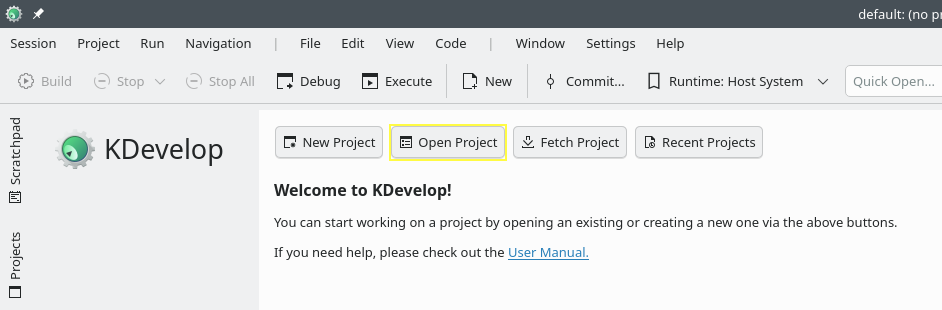
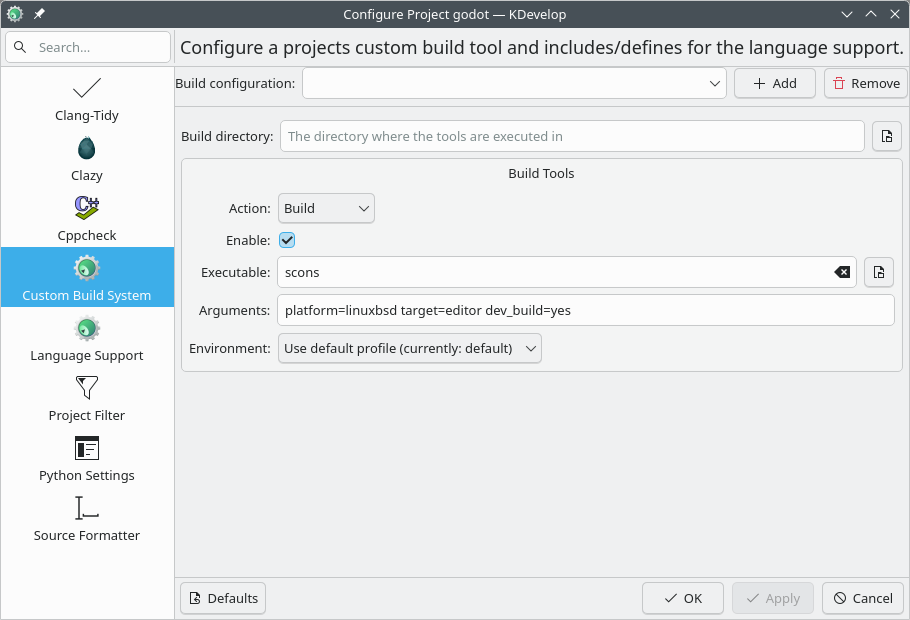

KDevelop
KDevelop is a free, open source IDE for all desktop platforms.
Importing the project
From the KDevelop's main screen select Open Project.

KDevelop's main screen.
Navigate to the Godot root folder and select it.
On the next screen, choose Custom Build System for the Project Manager.

After the project has been imported, open the project configuration by right-clicking on it in the Projects panel and selecting Open Configuration.. option.

Under Language Support open the Includes/Imports tab and add the following paths:
. // A dot, to indicate the root of the Godot project core/ core/os/ core/math/ drivers/ platform/<your_platform>/ // Replace <your_platform> with a folder corresponding to your current platform

Apply the changes.
Under Custom Build System add a new build configuration with the following settings:
Build Directory
blank
Enable
True
Executable
scons
Arguments
See Introduction to the buildsystem for a full list of arguments.

Apply the changes and close the configuration window.
Debugging the project
Select Run > Configure Launches... from the top menu.

Click Add to create a new launch configuration.
Select Executable option and specify the path to your executable located in the
<Godot root directory>/binfolder. The name depends on your build configuration, e.g.godot.linuxbsd.editor.dev.x86_64for 64-bit LinuxBSD platform withplatform=linuxbsd,target=editor, anddev_build=yes.

If you run into any issues, ask for help in one of Godot's community channels.